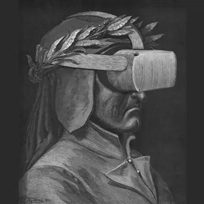

da ven 27 nov a sab 28 nov · dalle 14:20
ERT FVG Stagione teatrale 2026-27: Nel mezzo dell'Inferno
spettacolo in VR – Realtà Virtuale con l’utilizzo di visori per singolo spettatore visione consigliata dai 14 anni in su Ciascuno spettatore parteciperà a Nel mezzo dell’Inferno da solo e sarà libero di muoversi sul palco ed esplorare lo spazio con la realtà virtuale.…
 Indicazioni
Indicazioni
- Costi e prenotazioni
- Costo non indicato · Prenotazione non indicata
- Programma
- Programma da verificare. Apri la fonte ufficiale per orari e possibili aggiornamenti.
- In caso di maltempo
- Nessuna indicazione specifica pubblicata.
- Note
- Acquisito automaticamente dalla fonte.
L’EVENTO
Descrizione completa
spettacolo in VR – Realtà Virtuale con l’utilizzo di visori per singolo spettatore
visione consigliata dai 14 anni in su Ciascuno spettatore parteciperà a Nel mezzo dell’Inferno da solo e sarà libero di muoversi sul palco ed esplorare lo spazio con la realtà virtuale.
L’esperienza ha una durata di 35 minuti; nelle giornate di spettacolo gli slot orari sono i seguenti: 15.00 || 15.40 || 16.20 || 17.00 || 17.40 || 18.20 || 19.00 || 19.40 ||20.20 || 21.00 || 21.40
La prenotazione è necessaria: biglietteria@ertfvg.it / 0432 224246 Dante compone l’ Inferno mentre è immerso nell’esperienza straniante e dolorosa dell’esilio, lontano da casa e gravato dal sentimento dell’ingiustizia. Attraverso la scrittura inventa così la possibilità di essere autore e allo stesso tempo narratore e personaggio di un’esperienza di evoluzione e redenzione che varrà per se stesso ma anche per il resto dell’umanità. Il Dante protagonista di questo viaggio nel regno dell’oltretomba comprende che è la relazione con gli altri e le altre – nel segno della volontà divina – a sostenerlo e condurlo sulla via della salvezza e della felicità.
Il contatto con gli spiriti e le presenze mostruose che incontra, il profondo legame con il maestro Virgilio e infine l’antica fiamma d’amore che lo connette a Beatrice, non più muto angelo da celebrare, ma guida severa e autorevole fonte di coraggio.
Di questo percorso l’Inferno rappresenta la parte più dura che mette il poeta, e chi con lui si immedesima, a contatto con fragilità profonde, paure e inadeguatezze, di fronte alla diversità data dal suo essere vivo tra i morti e dunque in potenza salvato. Dante stabilisce così la possibilità di creare un altro mondo, speculare e connesso a quello reale, nel quale l’io possa fare un’esperienza diretta di trasformazione. Questo mondo è la letteratura. Allo stesso modo in questo progetto teatrale ed esperienziale si è scelto l’uso della tecnologia della Realtà Virtuale Immersiva, coniugata a una progettazione architettonica dello spazio e del suono in 3D, al fine di porre il pubblico a contatto con la totalità di una dimensione fantastica, che non vuole sostituirsi a quella reale, ma restare a questa interconnessa, rappresentando uno stimolo di ricerca e cambiamento. Si comincerà con un prologo: uno spazio di accoglienza e raccoglimento iniziale, che metterà ciascuno di fronte al proprio io e alla domanda: Perché fare questo viaggio? Quali i desideri e le paure?
Indossati i visori, uno ad uno gli spettatori saranno accompagnati oltre il muro che separa l’aldiquà dall’aldilà e lasciati al loro viaggio. La prima parte del quale sarà uguale per tutti, mentre la seconda condurrà casualmente gli spettatori in tre luoghi selezionati tra gli ambienti infernali per ricondurli poi nuovamente ad un comune finale. L’esperienza resta dunque replicabile e in sé stessa aperta, perché attraverso il contatto con la morte contiene in sé tutte le possibilità della vita. drammaturgia di Fabrizio Pallara e Roberta Ortolano
regia di Fabrizio Pallara
voci di Valerio Malorni (Virgilio, Caronte), Lorenzo Gioielli (Ulisse, Farinata degli Uberti, Conte Ugolino) e Silvia Gallerano (Beatrice e Francesca)
musiche: Økapi
modellazione e animazione 3D: Massimo Racozzi
progettazione ambienti architettonici: Sara Ferazzoli
sviluppo applicazione e implementazione VR: Alessandro Passoni co-produzione: LAC-Lugano Arte e Cultura e CSS Teatro stabile di innovazione del FVG nell’ambito del progetto ‘D’ante Litteram — Dante Alighieri nostro contemporaneo’ riconosciuto e sostenuto dal Comitato nazionale per le Celebrazioni dei 700 anni dalla morte di Dante Aligheri del MIC — Ministero della Cultura Premio nazionale Franco Enriquez 2022 – XVIII^ edizione
IL PROGRAMMA
Programma e orari
Appuntamenti raccolti dalle fonti elencate. Dove manca un orario, non è ancora disponibile in questa scheda.
Programma pubblicato
- Dal 2026-11-27 al 2026-11-28
INFORMAZIONI UTILI
Prima di partire
- Controllare la fonte prima di partire.
ORGANIZZAZIONE